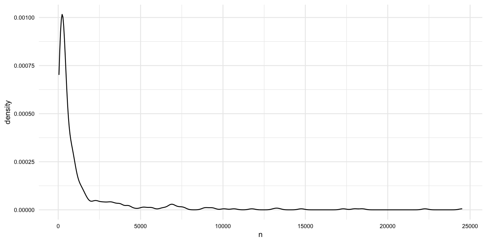

Overview
The curated dataset reflects a tidy version of the original data. This data is relatively project-neutral. A such, project-specific changes are often made to bring the data more in line with the research goals. This may include modifying the unit of observation and/ or adding additional attributes to the data. This process may generate one or more new datasets that are used for analysis.
In this recipe, we will explore a practical example of transforming data. This will include operations such as:
- Text normalization and tokenization
- Creating new variables by splitting, merging, and recoding existing variables
- Augmenting data with additional variables from other sources or resources
Along the way, we will employ a variety of tools and techniques to accomplish these tasks. Let's load the packages we will need for this recipe.
# Load packages
library(readr)
library(dplyr)
library(stringr)
library(tidyr)
library(tidytext)
library(qtalrkit)In Lab 7, we will apply what we have learned in this recipe to a new dataset.
Concepts and strategies
Orientation
Curated datasets are often project-neutral. That is, they are not necessarily designed to answer a specific research question. Rather, they are designed to be flexible enough to be used in a variety of projects. This is a good thing, but it also means that we will likely need to transform the data to bring it more in line with our research goals. This can include normalizing text, modifying the unit of observation and/ or adding additional attributes to the data.
In this recipe, we will explore a practical example of transforming data. We will start with a curated dataset and transform it to reflect a specific research goal. The dataset we will use is the MASC dataset (Ide et al. 2008). This dataset contains a collection of words from a variety of genres and modalities of American English.
Tip Acquire and tidy the data
The MASC dataset is a curated version of the original data. This data is relatively project-neutral.
If you would like to acquire the original data and curate it for use in this recipe, you can do so by running the following code:
# Acquire the original data
qtalrkit::get_compressed_data(
url = "..",
target_dir = "data/original/masc/"
)
# Curate the data
# ... write a function and add it to the packageAs a starting point, I will assume that the curated dataset is available in the data/derived/masc/ directory, as seen below.
data/
├── analysis/
├── derived/
│ ├── masc_curated_dd.csv
│ ├── masc/
│ │ ├── masc_curated.csv
├── original/
│ ├── masc_do.csv
│ ├── masc/
│ │ ├── ...The first step is to inspect the data dictionary file. This file contains information about the variables in the dataset. It is also a good idea to review the data origin file, which contains information about the original data source.
Looking at the data dictionary, in Table 1.
| variable | name | description | variable_type |
|---|---|---|---|
| file | File | ID number of the source file | character |
| ref | Reference | Reference number within the source file | integer |
| base | Base | Base form of the word (lemma) | character |
| msd | MSD | Part-of-speech tag (PENN tagset) | character |
| string | String | Text content of the word | character |
| title | Title | Title of the source file | character |
| source | Source | Name of the source | character |
| date | Date | Date of the source file (if available) | character |
| class | Class | Classification of the source. Modality and genre | character |
| domain | Domain | Domain or topic of the source | character |
Let's read in the data and take a glimpse at it.
# Read the data
masc_curated <- read_csv("data/derived/masc/masc_curated.csv")
# Preview
glimpse(masc_curated)## Rows: 591,097
## Columns: 10
## $ file <chr> "110CYL067", "110CYL067", "110CYL067", "110CYL067", "110CYL067"…
## $ ref <dbl> 0, 1, 2, 3, 4, 5, 6, 7, 8, 9, 10, 11, 12, 13, 14, 15, 16, 17, 1…
## $ base <chr> "december", "1998", "your", "contribution", "to", "goodwill", "…
## $ msd <chr> "NNP", "CD", "PRP$", "NN", "TO", "NNP", "MD", "VB", "JJR", "IN"…
## $ string <chr> "December", "1998", "Your", "contribution", "to", "Goodwill", "…
## $ title <chr> "110CYL067", "110CYL067", "110CYL067", "110CYL067", "110CYL067"…
## $ source <chr> "ICIC Corpus of Philanthropic Fundraising Discourse", "ICIC Cor…
## $ date <chr> NA, NA, NA, NA, NA, NA, NA, NA, NA, NA, NA, NA, NA, NA, NA, NA,…
## $ class <chr> "WR LT", "WR LT", "WR LT", "WR LT", "WR LT", "WR LT", "WR LT", …
## $ domain <chr> "philanthropic fundraising discourse", "philanthropic fundraisi…We may also want to do a summary overview of the dataset with the skimr package. This will give us a sense of the data types and the number of missing values.
── Data Summary ───────────────────────
Values
Name masc_curated
Number of rows 591097
Number of columns 10
_______________________
Column type frequency:
character 9
numeric 1
________________________
Group variables None
── Variable type: character ───────────
skim_variable n_missing complete_rate min max empty n_unique whitespace
1 file 0 1 3 40 0 392 0
2 base 4 1.00 1 99 0 28010 0
3 msd 0 1 1 8 0 60 0
4 string 25 1.00 1 99 0 39474 0
5 title 0 1 3 203 0 373 0
6 source 5732 0.990 3 139 0 348 0
7 date 94002 0.841 4 17 0 62 0
8 class 0 1 5 5 0 18 0
9 domain 18165 0.969 4 35 0 21 0
── Variable type: numeric ─────────────
skim_variable n_missing complete_rate mean sd p0 p25 p50 p75 p100 hist
1 ref 0 1 3854. 4633. 0 549 2033 5455 24519 ▇▂▁▁▁In summary, the dataset contains 591,097 observations and 10 variables. The unit of observation is the word. The variable names are somewhat opaque, but the data dictionary provides some context that will help us understand the data.
Now we want to consider how we plan to use this data in our analysis. Let's assume that we want to use this data to explore lexical variation in the MASC dataset across modalities and genres. We will want to transform the data to reflect this goal.
In Table 2, we see an idealized version of the dataset we would like to have.
| doc_id | modality | genre | term_num | term | lemma | pos |
|---|---|---|---|---|---|---|
| ... | ... | ... | ... | ... | ... | ... |
Of note, in this recipe we will derive a single transformed dataset. In other projects, you may want to generate various datasets with different units of observations. It all depends on your research question and the research aim that you are adopting.
Transforming data
To get from the curated dataset to the idealized dataset, we will need to perform a number of transformations. Some of these transformations will be relatively straightforward, while others will require more work. Let's start with the easy ones.
- Let's drop the variables that we will not use and at the same time rename the variables to make them more intuitive.
We will use the select() function to drop or rename variables.
# Drop and rename variables
masc_df <-
masc_curated |>
select(
doc_id = file,
term_num = ref,
term = string,
lemma = base,
pos = msd,
mod_gen = class
)
masc_df## # A tibble: 591,097 × 6
## doc_id term_num term lemma pos mod_gen
## <chr> <dbl> <chr> <chr> <chr> <chr>
## 1 110CYL067 0 December december NNP WR LT
## 2 110CYL067 1 1998 1998 CD WR LT
## 3 110CYL067 2 Your your PRP$ WR LT
## 4 110CYL067 3 contribution contribution NN WR LT
## 5 110CYL067 4 to to TO WR LT
## 6 110CYL067 5 Goodwill goodwill NNP WR LT
## 7 110CYL067 6 will will MD WR LT
## 8 110CYL067 7 mean mean VB WR LT
## 9 110CYL067 8 more more JJR WR LT
## 10 110CYL067 9 than than IN WR LT
## # ℹ 591,087 more rowsThat's a good start on the structure.
- Next, we will split the
mod_genvariable into two variables:modalityandgenre.
We have a variable mod_gen that contains two pieces of information: modality and genre (e.g., WR LT). The information appears to separated by a space. We can make sure this is the case by tabulating the values. The count() function will count the number of occurrences of each value in a variable, and as a side effect it will summarize the values of the variable so we can see if there are any unexpected values.
## # A tibble: 18 × 2
## mod_gen n
## <chr> <int>
## 1 SP TR 71630
## 2 WR EM 62036
## 3 WR FC 38608
## 4 WR ES 34938
## 5 WR FT 34373
## 6 WR BL 33278
## 7 WR JO 33042
## 8 WR JK 32420
## 9 WR NP 31225
## 10 SP MS 29879
## 11 WR NF 29531
## 12 WR TW 28128
## 13 WR GV 27848
## 14 WR TG 27624
## 15 WR LT 26468
## 16 SP FF 23871
## 17 WR TC 19419
## 18 SP TP 6779Looks good, our values are separated by a space. We can use the separate_wider_delim() function from the tidyr package to split the variable into two variables. We will use the delim argument to specify the delimiter and the names argument to specify the names of the new variables.
# Split mod_gen into modality and genre
masc_df <-
masc_df |>
separate_wider_delim(
cols = mod_gen,
delim = " ",
names = c("modality", "genre")
)
masc_df## # A tibble: 591,097 × 7
## doc_id term_num term lemma pos modality genre
## <chr> <dbl> <chr> <chr> <chr> <chr> <chr>
## 1 110CYL067 0 December december NNP WR LT
## 2 110CYL067 1 1998 1998 CD WR LT
## 3 110CYL067 2 Your your PRP$ WR LT
## 4 110CYL067 3 contribution contribution NN WR LT
## 5 110CYL067 4 to to TO WR LT
## 6 110CYL067 5 Goodwill goodwill NNP WR LT
## 7 110CYL067 6 will will MD WR LT
## 8 110CYL067 7 mean mean VB WR LT
## 9 110CYL067 8 more more JJR WR LT
## 10 110CYL067 9 than than IN WR LT
## # ℹ 591,087 more rows- Create a document id variable.
Now that we have the variables we want, we can turn our attention to the values of the variables. Let's start with the doc_id variable. This may a good variable to use as the document id. If we take a look at the values, however, we can see that the values are not very informative.
Let's use the distinct() function to only show the unique values of the variable. We will also chain a slice_sample() function to randomly select a sample of the values. This will give us a sense of the values in the variable.
# Preview doc_id
masc_df |>
distinct(doc_id) |>
slice_sample(n = 10)## # A tibble: 10 × 1
## doc_id
## <chr>
## 1 JurassicParkIV-INT
## 2 111367
## 3 NYTnewswire6
## 4 sw2014-ms98-a-trans
## 5 52713
## 6 new_clients
## 7 cable_spool_fort
## 8 jokes10
## 9 wsj_2465
## 10 wsj_0158You can run this code various times to get a different sample of values.
Since the doc_id variable is not informative, let's replace the variable's values with numeric values. In the end, we want a digit for each unique document and we want the words in each document to be grouped together.
To do this we will need to group the data by doc_id and then generate a new number for each group. We can achieve this by passing the data grouped by doc_id (group_by()) to the mutate() function and then using the cur_group_id() function to generate a number for each group.
# Recode doc_id
masc_df <-
masc_df |>
group_by(doc_id) |>
mutate(doc_id = cur_group_id()) |>
ungroup()
masc_df## # A tibble: 591,097 × 7
## doc_id term_num term lemma pos modality genre
## <int> <dbl> <chr> <chr> <chr> <chr> <chr>
## 1 1 0 December december NNP WR LT
## 2 1 1 1998 1998 CD WR LT
## 3 1 2 Your your PRP$ WR LT
## 4 1 3 contribution contribution NN WR LT
## 5 1 4 to to TO WR LT
## 6 1 5 Goodwill goodwill NNP WR LT
## 7 1 6 will will MD WR LT
## 8 1 7 mean mean VB WR LT
## 9 1 8 more more JJR WR LT
## 10 1 9 than than IN WR LT
## # ℹ 591,087 more rowsTo check, we can again apply the count() function.
## # A tibble: 392 × 2
## doc_id n
## <int> <int>
## 1 158 24520
## 2 300 22261
## 3 112 18459
## 4 113 17986
## 5 215 17302
## 6 312 14752
## 7 311 13376
## 8 200 13138
## 9 217 11753
## 10 186 10665
## 11 140 10064
## 12 304 9417
## 13 154 9277
## 14 98 8959
## 15 152 8862
## 16 238 7617
## 17 240 7580
## 18 155 7361
## 19 79 7217
## 20 80 7032
## 21 230 6931
## 22 233 6887
## 23 77 6850
## 24 76 6839
## 25 156 6664
## 26 78 6435
## 27 162 6251
## 28 203 5665
## 29 137 5654
## 30 163 5330
## 31 151 5155
## 32 231 5059
## 33 211 4656
## 34 243 4291
## 35 83 4269
## 36 216 4263
## 37 92 4148
## 38 81 3874
## 39 242 3785
## 40 219 3752
## 41 235 3745
## 42 201 3713
## 43 236 3514
## 44 303 3481
## 45 183 3353
## 46 153 3340
## 47 251 3295
## 48 171 3198
## 49 172 3151
## 50 252 3072
## 51 170 3054
## 52 169 3038
## 53 253 2848
## 54 259 2841
## 55 84 2768
## 56 166 2730
## 57 167 2691
## 58 199 2562
## 59 85 2557
## 60 82 2470
## 61 283 2387
## 62 184 2349
## 63 250 2290
## 64 198 2246
## 65 310 2242
## 66 254 2151
## 67 205 2147
## 68 181 2099
## 69 187 1978
## 70 229 1938
## 71 195 1804
## 72 260 1734
## 73 75 1697
## 74 191 1696
## 75 245 1694
## 76 255 1682
## 77 257 1613
## 78 248 1594
## 79 244 1539
## 80 220 1468
## 81 213 1451
## 82 308 1443
## 83 234 1441
## 84 274 1433
## 85 247 1426
## 86 196 1414
## 87 179 1371
## 88 256 1364
## 89 209 1354
## 90 176 1336
## 91 307 1326
## 92 258 1275
## 93 249 1271
## 94 223 1269
## 95 225 1240
## 96 241 1203
## 97 226 1171
## 98 227 1144
## 99 228 1131
## 100 178 1103
## 101 150 1102
## 102 214 1102
## 103 266 1092
## 104 192 1063
## 105 232 1030
## 106 149 1023
## 107 246 1015
## 108 363 1013
## 109 141 1004
## 110 197 989
## 111 177 982
## 112 309 974
## 113 164 941
## 114 190 936
## 115 353 932
## 116 271 931
## 117 286 925
## 118 189 923
## 119 193 904
## 120 143 901
## 121 139 898
## 122 175 888
## 123 298 885
## 124 332 879
## 125 391 869
## 126 147 858
## 127 297 851
## 128 26 842
## 129 86 842
## 130 261 831
## 131 212 815
## 132 54 810
## 133 12 809
## 134 173 801
## 135 146 797
## 136 21 796
## 137 221 794
## 138 224 794
## 139 306 794
## 140 42 790
## 141 145 783
## 142 165 766
## 143 126 760
## 144 148 758
## 145 138 754
## 146 66 749
## 147 355 748
## 148 299 741
## 149 392 741
## 150 71 724
## 151 30 707
## 152 239 701
## 153 185 692
## 154 204 688
## 155 174 652
## 156 3 649
## 157 180 646
## 158 202 620
## 159 390 620
## 160 136 616
## 161 121 612
## 162 279 603
## 163 1 596
## 164 51 593
## 165 305 575
## 166 144 564
## 167 9 533
## 168 123 533
## 169 124 533
## 170 2 522
## 171 119 510
## 172 295 509
## 173 280 506
## 174 291 506
## 175 11 495
## 176 282 490
## 177 194 484
## 178 268 482
## 179 5 481
## 180 60 460
## 181 301 459
## 182 63 458
## 183 7 454
## 184 222 451
## 185 20 446
## 186 168 444
## 187 288 441
## 188 237 440
## 189 354 438
## 190 64 435
## 191 93 435
## 192 102 433
## 193 125 425
## 194 36 423
## 195 114 420
## 196 275 420
## 197 58 417
## 198 352 415
## 199 374 412
## 200 350 410
## 201 62 407
## 202 120 405
## 203 70 403
## 204 206 403
## 205 294 402
## 206 278 399
## 207 210 395
## 208 263 393
## 209 292 390
## 210 14 389
## 211 105 380
## 212 61 374
## 213 10 364
## 214 128 364
## 215 89 362
## 216 387 360
## 217 342 359
## 218 111 358
## 219 129 358
## 220 13 348
## 221 34 348
## 222 33 347
## 223 38 344
## 224 117 340
## 225 91 337
## 226 59 333
## 227 16 332
## 228 132 330
## 229 65 323
## 230 290 322
## 231 218 314
## 232 57 313
## 233 389 313
## 234 35 308
## 235 37 307
## 236 40 307
## 237 281 306
## 238 95 305
## 239 296 302
## 240 22 300
## 241 108 299
## 242 50 291
## 243 388 291
## 244 73 283
## 245 68 281
## 246 358 281
## 247 207 279
## 248 338 279
## 249 46 275
## 250 69 274
## 251 90 268
## 252 131 265
## 253 67 262
## 254 72 260
## 255 130 260
## 256 265 260
## 257 135 259
## 258 88 258
## 259 94 257
## 260 277 256
## 261 115 253
## 262 101 252
## 263 357 250
## 264 107 245
## 265 262 245
## 266 317 245
## 267 96 243
## 268 41 240
## 269 45 238
## 270 157 237
## 271 293 237
## 272 142 236
## 273 349 230
## 274 335 228
## 275 4 224
## 276 371 224
## 277 29 223
## 278 134 220
## 279 39 218
## 280 161 217
## 281 375 217
## 282 365 214
## 283 43 213
## 284 369 212
## 285 315 211
## 286 384 211
## 287 104 210
## 288 319 210
## 289 49 206
## 290 366 205
## 291 87 203
## 292 48 202
## 293 346 202
## 294 122 201
## 295 351 201
## 296 313 199
## 297 343 198
## 298 318 196
## 299 285 195
## 300 333 195
## 301 364 194
## 302 378 194
## 303 15 193
## 304 264 190
## 305 373 190
## 306 382 189
## 307 55 187
## 308 386 187
## 309 74 185
## 310 330 185
## 311 109 184
## 312 17 183
## 313 53 177
## 314 368 177
## 315 287 176
## 316 23 175
## 317 56 175
## 318 284 175
## 319 289 175
## 320 383 173
## 321 380 172
## 322 381 172
## 323 19 169
## 324 370 168
## 325 6 167
## 326 269 166
## 327 345 163
## 328 326 162
## 329 18 160
## 330 276 160
## 331 116 159
## 332 302 158
## 333 99 157
## 334 272 157
## 335 103 155
## 336 385 154
## 337 372 153
## 338 270 151
## 339 379 150
## 340 52 149
## 341 182 149
## 342 334 146
## 343 376 146
## 344 31 143
## 345 377 143
## 346 133 140
## 347 361 138
## 348 273 136
## 349 325 135
## 350 328 135
## 351 127 134
## 352 322 134
## 353 336 134
## 354 24 133
## 355 47 132
## 356 316 131
## 357 327 131
## 358 27 127
## 359 340 127
## 360 337 124
## 361 320 122
## 362 348 121
## 363 331 120
## 364 323 118
## 365 362 116
## 366 208 114
## 367 32 113
## 368 25 111
## 369 339 111
## 370 188 110
## 371 367 110
## 372 324 108
## 373 8 106
## 374 347 105
## 375 44 104
## 376 344 103
## 377 360 99
## 378 267 98
## 379 341 97
## 380 359 97
## 381 160 95
## 382 28 94
## 383 159 93
## 384 106 90
## 385 118 90
## 386 321 89
## 387 329 86
## 388 110 80
## 389 100 71
## 390 314 63
## 391 97 52
## 392 356 45We have 392 unique documents in the dataset. We also can see that the word lengths vary quite a bit. That's something we will need to keep in mind as we move forward into the analysis.
- Check the values of the
posvariable.
The pos variable contains the part-of-speech tags for each word. The PENN Treebank tagset is used. Let's take a look at the values to get familiar with them, and also to see if there are any unexpected values.
Let's use the slice_sample() function to randomly select a sample of the values. This will give us a sense of the values in the variable.
# Preview pos
masc_df |>
slice_sample(n = 10)## # A tibble: 10 × 7
## doc_id term_num term lemma pos modality genre
## <int> <dbl> <chr> <chr> <chr> <chr> <chr>
## 1 303 2511 proliferation proliferation NN WR TC
## 2 76 5245 And and CC WR FT
## 3 300 17170 DAVY davy NNP SP MS
## 4 80 5341 ” ” NN WR FT
## 5 171 900 . . . WR TG
## 6 166 2588 out out RP WR BL
## 7 67 58 organization organization NN WR LT
## 8 216 2944 include include VB WR TG
## 9 234 1304 donation donation NN WR LT
## 10 231 3539 say say VB WR NFAfter running this code a few times, we can see that the many of the values are as expected. There are, however, some unexpected values. In particular, some punctuation and symbols are tagged as nouns.
We can get a better appreciation for the unexpected values by filtering the data to only show non alpha-numeric values (^\\W+$) in the term column and then tabulating the values by term and pos.
# Filter and tabulate
masc_df |>
filter(str_detect(term, "^\\W+$")) |>
count(term, pos) |>
arrange(-n) |>
print(n = 20)## # A tibble: 152 × 3
## term pos n
## <chr> <chr> <int>
## 1 "," , 27112
## 2 "." . 26256
## 3 "\"" '' 5495
## 4 ":" : 4938
## 5 "?" . 3002
## 6 ")" ) 2447
## 7 "(" ( 2363
## 8 "-" : 1778
## 9 "!" . 1747
## 10 "/" NN 1494
## 11 "’" NN 1319
## 12 "-" - 1213
## 13 "”" NN 1076
## 14 "“" NN 1061
## 15 "]" NN 1003
## 16 "[" NN 1001
## 17 ";" : 991
## 18 "--" : 772
## 19 ">" NN 752
## 20 "..." ... 716
## # ℹ 132 more rowsAs we can see from the sample above and from the PENN tagset documentation, most punctuation is tagged as the punctuation itself. For example, the period is tagged as . and the comma is tagged as ,. Let's edit the data to reflect this.
Let's look at the code, and then we will discuss it.
# Recode
masc_df <-
masc_df |>
mutate(pos = case_when(
str_detect(term, "^\\W+$") ~ str_sub(term, start = 1, end = 1),
TRUE ~ pos
))
# Check
masc_df |>
filter(str_detect(term, "^\\W+$")) |> # preview
count(term, pos) |>
arrange(-n) |>
print(n = 20)## # A tibble: 127 × 3
## term pos n
## <chr> <chr> <int>
## 1 "," "," 27113
## 2 "." "." 26257
## 3 "\"" "\"" 5502
## 4 ":" ":" 4939
## 5 "?" "?" 3002
## 6 "-" "-" 2994
## 7 ")" ")" 2447
## 8 "(" "(" 2363
## 9 "!" "!" 1747
## 10 "/" "/" 1495
## 11 "’" "’" 1325
## 12 "”" "”" 1092
## 13 "“" "“" 1078
## 14 "]" "]" 1003
## 15 "[" "[" 1001
## 16 ";" ";" 993
## 17 "--" "-" 772
## 18 ">" ">" 753
## 19 "..." "." 747
## 20 "'" "'" 741
## # ℹ 107 more rowsThe case_when() function allows us to specify a series of conditions and values. The first condition is that the term variable contains only non alpha-numeric characters. If it does, then we want to replace the value of the pos variable with the first character of the term variable, str_sub(term, start = 1, end = 1). If the condition is not met, then we want to keep the original value of the pos variable, TRUE ~ pos.
We can see that our code worked by filtering the data to only show non alpha-numeric values (^\\W+$) in the term column and then tabulating the values by term and pos.
For completeness, I will also recode the lemma values for these values as well as the lemma can some times be multiple punctuation marks (e.g. !!!!!, ---, etc.) for these terms.
# Recode
masc_df <-
masc_df |>
mutate(lemma = case_when(
str_detect(term, "^\\W+$") ~ str_sub(term, start = 1, end = 1),
TRUE ~ lemma
))
# Check
masc_df |>
filter(str_detect(term, "^\\W+$")) |> # preview
count(term, lemma) |>
arrange(-n) |>
print(n = 20)## # A tibble: 127 × 3
## term lemma n
## <chr> <chr> <int>
## 1 "," "," 27113
## 2 "." "." 26257
## 3 "\"" "\"" 5502
## 4 ":" ":" 4939
## 5 "?" "?" 3002
## 6 "-" "-" 2994
## 7 ")" ")" 2447
## 8 "(" "(" 2363
## 9 "!" "!" 1747
## 10 "/" "/" 1495
## 11 "’" "’" 1325
## 12 "”" "”" 1092
## 13 "“" "“" 1078
## 14 "]" "]" 1003
## 15 "[" "[" 1001
## 16 ";" ";" 993
## 17 "--" "-" 772
## 18 ">" ">" 753
## 19 "..." "." 747
## 20 "'" "'" 741
## # ℹ 107 more rows- Check the values of the
modalityvariable.
The modality variable contains the modality tags for each document. Let's take a look at the values.
Let's tabulate the values with count().
# Tabulate modality
masc_df |>
count(modality)## # A tibble: 2 × 2
## modality n
## <chr> <int>
## 1 SP 132159
## 2 WR 458938We see that the values are SP and WR, which stand for spoken and written, respectively. To make this a bit more transparent, we can recode these values to Spoken and Written. We will use the case_when() function to do this.
# Recode modality
masc_df <-
masc_df |>
mutate(
modality = case_when(
modality == "SP" ~ "Spoken",
modality == "WR" ~ "Written"
)
)
masc_df## # A tibble: 591,097 × 7
## doc_id term_num term lemma pos modality genre
## <int> <dbl> <chr> <chr> <chr> <chr> <chr>
## 1 1 0 December december NNP Written LT
## 2 1 1 1998 1998 CD Written LT
## 3 1 2 Your your PRP$ Written LT
## 4 1 3 contribution contribution NN Written LT
## 5 1 4 to to TO Written LT
## 6 1 5 Goodwill goodwill NNP Written LT
## 7 1 6 will will MD Written LT
## 8 1 7 mean mean VB Written LT
## 9 1 8 more more JJR Written LT
## 10 1 9 than than IN Written LT
## # ℹ 591,087 more rows- Check the values of the
genrevariable.
Let's look at the values of the genre variable.
## # A tibble: 18 × 2
## genre n
## <chr> <int>
## 1 BL 33278
## 2 EM 62036
## 3 ES 34938
## 4 FC 38608
## 5 FF 23871
## 6 FT 34373
## 7 GV 27848
## 8 JK 32420
## 9 JO 33042
## 10 LT 26468
## 11 MS 29879
## 12 NF 29531
## 13 NP 31225
## 14 TC 19419
## 15 TG 27624
## 16 TP 6779
## 17 TR 71630
## 18 TW 28128These genre labels are definitely cryptic. The data dictionary does not list these labels and their more verbose descriptions. However, looking at the original data's README, we can find the file (resource-headers.xml) that lists these genre labels.
1. 'BL' for blog
2. 'NP' is newspaper
3. 'EM' is email
4. 'ES' is essay
5. 'FT' is fictlets
6. 'FC' is fiction
7. 'GV' is government
8. 'JK' is jokes
9. 'JO' is journal
10. 'LT' is letters
11. 'MS' is movie script
12. 'NF' is non-fiction
13. 'FF' is face-to-face
14. 'TC' is technical
15. 'TG' is travel guide
16. 'TP' is telephone
17. 'TR' is transcript
18. 'TW' is twitterNow we can again use the case_when() function. This time we will see if genre is equal to one of the genre labels and if it is, then we will replace the value with the more verbose description.
# Recode genre
masc_df <-
masc_df |>
mutate(
genre = case_when(
genre == "BL" ~ "Blog",
genre == "NP" ~ "Newspaper",
genre == "EM" ~ "Email",
genre == "ES" ~ "Essay",
genre == "FT" ~ "Fictlets",
genre == "FC" ~ "Fiction",
genre == "GV" ~ "Government",
genre == "JK" ~ "Jokes",
genre == "JO" ~ "Journal",
genre == "LT" ~ "Letters",
genre == "MS" ~ "Movie script",
genre == "NF" ~ "Non-fiction",
genre == "FF" ~ "Face-to-face",
genre == "TC" ~ "Technical",
genre == "TG" ~ "Travel guide",
genre == "TP" ~ "Telephone",
genre == "TR" ~ "Transcript",
genre == "TW" ~ "Twitter"
)
)
masc_df## # A tibble: 591,097 × 7
## doc_id term_num term lemma pos modality genre
## <int> <dbl> <chr> <chr> <chr> <chr> <chr>
## 1 1 0 December december NNP Written Letters
## 2 1 1 1998 1998 CD Written Letters
## 3 1 2 Your your PRP$ Written Letters
## 4 1 3 contribution contribution NN Written Letters
## 5 1 4 to to TO Written Letters
## 6 1 5 Goodwill goodwill NNP Written Letters
## 7 1 6 will will MD Written Letters
## 8 1 7 mean mean VB Written Letters
## 9 1 8 more more JJR Written Letters
## 10 1 9 than than IN Written Letters
## # ℹ 591,087 more rowsDuring the process of transformation and afterwards, it is a good idea to tabulate and/ or visualize the dataset. This provides us an opportunity to get to know the dataset better and also may help us identify inconsistencies that we would like to address in the transformation, or at least be aware of as we move towards analysis.
# How many documents are in each modality?
masc_df |>
distinct(doc_id, modality) |>
count(modality) |>
arrange(-n)## # A tibble: 2 × 2
## modality n
## <chr> <int>
## 1 Written 371
## 2 Spoken 21
# How many documents are in each genre?
masc_df |>
distinct(doc_id, genre) |>
count(genre) |>
arrange(-n)## # A tibble: 18 × 2
## genre n
## <chr> <int>
## 1 Email 174
## 2 Newspaper 54
## 3 Letters 49
## 4 Blog 21
## 5 Jokes 16
## 6 Journal 12
## 7 Essay 8
## 8 Fiction 7
## 9 Travel guide 7
## 10 Face-to-face 6
## # ℹ 8 more rows
# What is the averge length of documents (in words)?
masc_df |>
group_by(doc_id) |>
summarize(n = n()) |>
summarize(
mean = mean(n),
median = median(n),
min = min(n),
max = max(n)
)## # A tibble: 1 × 4
## mean median min max
## <dbl> <dbl> <int> <int>
## 1 1508. 418. 45 24520
# What is the distribution of the length of documents by modality?
masc_df |>
group_by(doc_id, modality) |>
summarize(n = n()) |>
ggplot(aes(x = n, fill = modality)) +
geom_density(alpha = 0.5)
# What is the distribution of the length of documents by genre?
masc_df |>
group_by(doc_id, modality, genre) |>
summarize(n = n()) |>
ggplot(aes(x = genre, y = n)) +
geom_boxplot() +
facet_wrap(~ modality, scales = "free_x") +
theme(axis.text.x = element_text(angle = 45, hjust = 1))Once we are satisfied with the structure and values of the dataset, we can save it to a file. We will use the write_csv() function from the readr package to do this.
# Save the data
write_csv(masc_df, "data/derived/masc/masc_transformed.csv")The structure of the data/ directory in our project should now look like this:
Documenting data
The last step is to document the process and the resulting dataset(s). In this particular case we only derived one transformed dataset. The documentation steps are the same as in the curation step. We will organize and document the process file (often a .qmd file) and then create a data dictionary for each of the transformed datasets. The create_data_dictionary() function can come in handy for scaffolding the data dictionary file.
# Create a data dictionary
create_data_dictionary(
data = masc_df,
file_path = "data/derived/masc/masc_transformed_dd.csv"
)Summary
In this recipe, we have looked at an example of transforming a curated dataset. This recipe included operations such as:
- Text normalization
- Variable recoding
- Splitting variables
In other projects, the transformation steps will inevitably differ, but these strategies are commonly necessary in almost any project.
Just as with other steps in the data preparation process, it is important to document the transformation steps. This will help you and others understand the process and the resulting dataset(s).
Check your understanding
- Which function would you use to remove duplicate rows in a dataset?
-
The
str_c()function from thestringrpackage is used to separate strings rather than combine them. -
The
count()function from thedplyrpackage is used to tabulate the values of a variable. - If you want to recode the age of learners into categories such as "child", "teen", and "adult" based on their age, which function should you use?
- To normalize text by removing leading and trailing whitespace, you use the
()function from thestringrpackage. - To normalize text by converting all characters to lowercase, you use the
()function from thestringrpackage.
Lab preparation
In preparation for Lab 7, review and ensure you are comfortable with the following:
- Vector, data frame, and list data structures
- Subsetting and filtering data structures with and without regular expressions
- Reshaping datasets by rows and columns
In this lab, we will practice these skills and expand our knowledge of data preparation by transforming and documenting data with Tidyverse packages such as dplyr, tidyr, and stringr.
You will have a choice of a dataset to transform. Before you start the lab, you should consider which dataset you would like to use, what the idealized structure the transformed dataset will take, and what strategies you will likely employ to transform the dataset. You should also consider the information you need to document the data transformation process.